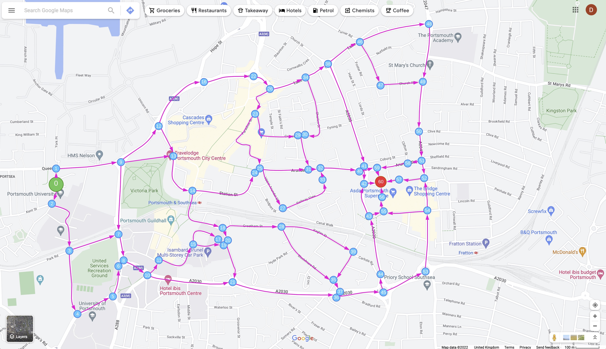

Bicycle Navigation System
Welcome! This system will navigate you from the green point '0' to the red point '60' on the map below. The route will follow the direction indicated by the blue arrows, and travel through a node at each decision point. The system allows you to customise your preferences towards road and junction features, asking you to rate how these features effect how safe you feel. You are also able to customise your preferences between feature categories, allowing you to assign higher and lower weightings to categories of road/junction features which have more impact on how comfortable you feel
By customising these weightings to your preferences, the route produced by the algorithm will closer represent the route you are most comfortable with
Use the buttons below to calculate the route using default weightings, or to customise these weightings. If you have previously made customisations to the route weightings, you will have the option to calculate the route using these saved values. All your preferences are saved in your browser, allowing you to pick up where you left off at a previous session
Currently loaded weightings:

Scenario 1 of 4 - Road Bicycle Lanes
Watch the 4 videos below, then indicate your desired weightings for each road the user is travelling along. Each road may feature a different style of bicycle lane
Key:
-5 ~~~ This feature has an extremely negative effect on how safe I feel
0 ~~~ This feature has no effect on how safe I feel
5 ~~~ This feature has an extremely positive effect on how safe I feel
Example 1
Example 2
Example 3
Example 4
Scenario 2 of 4 - Junction Right of Way
Watch the 2 videos below, then indicate your desired weightings for each style of Right of Way, at a junction
Key:
-5 ~~~ This feature has an extremely negative effect on how safe I feel
0 ~~~ This feature has no effect on how safe I feel
5 ~~~ This feature has an extremely positive effect on how safe I feel
Example 1
Example 2
Scenario 3 of 4 - Road Features Relative Weighting
Using the sliders below, indicate your desired weighting for each set of road features, relative to each other
Key:
0 ~~~ This set of features has no effect on my decision to use a road
5 ~~~ This set of features either has a huge positive or huge negative effect on my decision to use a road
Example Scenario
Person A is no more comfortable on a road with speed limit 10mph, than a road with speed limit 70mph.
However, they are extremely uncomfortable travelling along a road with more than one lane of traffic.
Therefore, they should indicate '0' for 'Speed Limit', and '5' for 'Number of Lanes'
If they change their mind and gain a strong desire to travel along a road with more than one lane, they should still indicate '5' for 'Number of Lanes'
Speed Limit
On a road segment in this sample area, there can be 10mph, 20mph, or 30mph speed limits
How much effect does changing the speed limit have on your decision to use the road?
Number of Lanes
On a road segment in this sample area, there can be 1, 2, or 3 lanes in the direction of travel
How much effect does changing the number of lanes have on your decision to use the road?
Road Traffic Direction
On a road segment in this sample area, there can be one-way or two-way traffic
How much effect does changing the road traffic direction have on your decision to use the road?
Bicycle Lane
On a road segment in this sample area, bicycle lanes can be:
Uninterrupted, clearly signed
Interrupted
Hard to follow
Not present
How much effect does changing the style of bicycle lane have on your decision to use the road?
Bus Lane
On a road segment in this sample area, bus lanes can be:
Uninterrupted, clearly signed
Interrupted
Hard to follow
Not present
How much effect does changing the style of bus lane have on your decision to use the road?
Traffic Calming Measures
On a road segment in this sample area, traffic calming measures can be:
Traffic Lights
Biccyle Priority Traffic Lights
Speed Bumps
Width Restriction Islands
Narrowing Islands
Speed Cameras
How much effect does changing the style of traffic calming measure have on your decision to use the road?
Number of Adjacent Roads Crossed
On a road segment in this sample area, you might cross 1, 2, 3, 4, 5 or 6 adjacent roads
How much effect does changing the number of adjacent roads crossed have on your decision to use the road?
Amount of Traffic Flow
On a road segment in this sample area, the amount of traffic might be low, medium or high
How much effect does changing the amount of traffic have on your decision to use the road?
Scenario 4 of 4 - Junction Features Relative Weighting
Using the sliders below, indicate your desired weighting for each set of junction features, relative to each other
Key:
0 ~~~ This set of features has no effect on my decision to use a junction
5 ~~~ This set of features either has a huge positive or huge negative effect on my decision to use a junction
Example Scenario
Person B is no more comfortable on any junction type, whether mini roundabout or crossroads.
However, they are extremely uncomfortable travelling through a junction which they do not have right of way.
Therefore, they should indicate '0' for 'Junction Type', and '5' for 'Right of Way'
If they change their mind and gain a strong desire to travel through junctions with no right of way, they should still indicate '5' for 'Right of Way'
Type of Junction
On a junction in this sample area, junctions can be of type:
Mini roundabout
Roundabout
T Junction
Crossroads
Slip Road
How much effect does changing the junction type have on your decision to use the junction?
Number of lanes
On a junction in this sample area, there 1, 2, 3, 4, 5, 6, 7, 8, 9, 10 lanes adjacent to a junction
How much effect does changing the number of lanes adjacent to a junction have on your decision to use the junction?
Junction Traffic Direction
On a junction in this sample area, there can be one-way or two-way traffic
How much effect does changing the traffic direction have on your decision to use the junction?
Turning Direction
On a junction in this sample area, there can be right, left or no (straight on) turning directions
How much effect does changing the turning direction have on your decision to use the junction?
Right of Way
On a junction in this sample area, you might have right of way, or not
How much effect does changing the right of way have on your decision to use the junction?
Bicycle Lane
On a junction in this sample area, bicycle lanes can be:
Uninterrupted, clearly signed
Interrupted
Hard to follow
Not present
How much effect does changing the style of bicycle lane have on your decision to use the junction?
Bus Lane
On a junction in this sample area, bus lanes can be:
Uninterrupted, clearly signed
Interrupted
Hard to follow
Not present
How much effect does changing the style of bus lane have on your decision to use the junction?
Traffic Lights
On a junction in this sample area, there can be traffic lights with bicycle priority, regular traffic lights or none at all
How much effect does changing the syle of traffic light have on your decision to use the junction?
Directions of Traffic
On a junction in this sample area, there can 1, 2, 3, 4 or 5 directions which traffic meets a junction at
How much effect does changing the number of directions of traffic have on your decision to use the junction?
Amount of Traffic
On a junction segment in this sample area, the amount of traffic might be low, medium or high
How much effect does changing the amount of traffic have on your decision to use the junction?